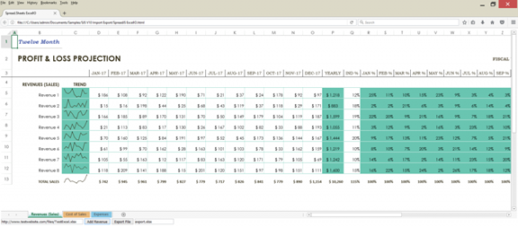
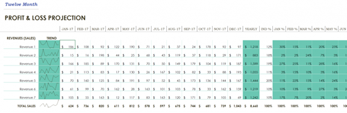
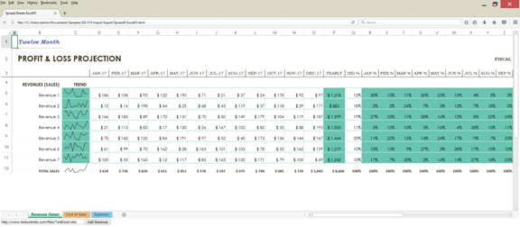
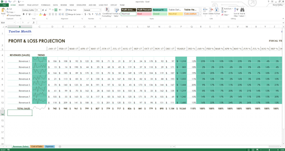

本文由葡萄城技术团队于原创并首发
转载请注明出处：葡萄城官网，葡萄城为开发者提供专业的开发工具、解决方案和服务，赋能开发者。
JavaScript是一个涵盖多种框架、直译式、可以轻松自定义客户端的脚本语言，在 Web 应用程序中，更加易于编码和维护。而Excel 作为一款深受用户喜爱的电子表格工具，借助其直观的界面、出色的计算性能和图表工具，已经成为数据统计领域不可或缺的软件之一。
如果有一款产品，能够将二者完美融合，将在前端表格数据处理、数据填报、数据可视化、在线文档等领域大放异彩。SpreadJS，正是这样一款功能布局与Excel高度类似，无需大量代码开发和测试即可实现数据展示、前端 Excel 导入导出、图表面板、数据绑定等业务场景的纯前端表格控件。
通过纯JavaScript，您完全可以实现导入和导出Excel文件功能，并为最终用户提供与这些文件进行I/O交互的界面。在本篇教程中，我将向您展示如何借助SpreadJS，在JavaScript中轻松实现导入和导出Excel文件的操作，以及将SpreadJS组件添加到HTML页面是多么的容易。

导入和编辑Excel文件后完成的页面
创建一个新的HTML页面并添加对SpreadJS下载包中Spread.Sheets脚本和CSS文件的引用：
<!DOCTYPE html>
<html>
<head>
<title>SpreadJS ExcelIO</title>
<script src="http://code.jquery.com/jquery-2.1.3.min.js" type="text/javascript"></script>
<script src="http://code.jquery.com/ui/1.11.4/jquery-ui.min.js" type="text/javascript"></script>
<link href="http://cdn.grapecity.com/spreadjs/hosted/css/gc.spread.sheets.excel2013white.10.1.0.css" rel="stylesheet" type="text/css" />
<script type="text/javascript" src="http://cdn.grapecity.com/spreadjs/hosted/scripts/gc.spread.sheets.all.10.1.0.min.js"></script>
<script type="text/javascript" src="http://cdn.grapecity.com/spreadjs/hosted/scripts/interop/gc.spread.excelio.10.1.0.min.js"></script>
</head>
<body>
<div id="ss" style="height:600px ; width :100%; "></div>
</body>
</html>
然后在初始化Spread.Sheets组件的页面中添加一个脚本，并使用div元素来包含它（因为SpreadJS电子表格组件使用了Canvas 绘制界面，所以这是初始化组件所必需的一步）：
<script type="text/javascript">
$(document).ready(function () {
var workbook = new GC.Spread.Sheets.Workbook(document.getElementById("ss"));
});
</script>
</head>
<body>
<div id="ss" style="height:600px ; width :100%; "></div>
</body>
我们需要创建一个客户端ExcelIO组件的实例，并用它来实际打开 Excel 文件：
var excelIO = new GC.Spread.Excel.IO();
然后我们需要添加一个导入文件的函数。在此示例中，我们导入本地文件，但您可以对服务器上的文件执行相同的操作。如果要从服务器端导入文件，则需要引用该位置。以下是输入元素的示例，用户可以在其中输入文件的位置：
<input type="text" id="importUrl" value="http://www.testwebsite.com/files/TestExcel.xlsx" style="width:300px" />
完成上述步骤后，您可以直接在脚本代码中访问该值：
var excelUrl = $("#importUrl").val();
以下导入函数的代码只使用本地文件作为“excelUrl”变量：
function ImportFile() {
var excelUrl = "./test.xlsx";
var oReq = new XMLHttpRequest();
oReq.open('get', excelUrl, true);
oReq.responseType = 'blob';
oReq.onload = function () {
var blob = oReq.response;
excelIO.open(blob, LoadSpread, function (message) {
console.log(message);
});
};
oReq.send(null);
}
function LoadSpread(json) {
jsonData = json;
workbook.fromJSON(json);
workbook.setActiveSheet("Revenues (Sales)");
}
无论您是在服务器上还是在本地引用文件，都需要在 $（document）.ready函数内的脚本中添加以下内容：
$(document).ready(function () {
$.support.cors = true;
workbook = new GC.Spread.Sheets.Workbook(document.getElementById("ss"));
//...
});
在本教程中，我们以导入一个名为 “Profit loss statement” 的Excel模板为例。

Excel模板
现在我们可以使用Spread.Sheets脚本在此文件中添加另一个收入行。让我们在页面上添加一个按钮来执行此操作：
<button id="addRevenue">Add Revenue</button>
我们可以为该按钮的click事件绑定一个函数，用以执行添加行并复制上一行的样式。要复制样式，我们需要使用copyTo函数并传入：
document.getElementById("addRevenue").onclick = function () {
var sheet = workbook.getActiveSheet();
sheet.addRows(11, 1);
sheet.copyTo(10, 1, 11, 1, 1, 29, GC.Spread.Sheets.CopyToOptions.style);
}
用于添加数据和Sparkline的所有以下脚本代码都将包含在此按钮单击事件处理程序中。对于大多数数据，我们可以使用setValue函数。这允许我们通过传入行索引、列索引和值在Spread中的工作表上设置值：
sheet.setValue(11, 1, "Revenue 8");
for (var c = 3; c < 15; c++) {
sheet.setValue(11, c, Math.floor(Math.random() * 200) + 10);
}
在P列中设置SUM公式以匹配其他行，并为Q列设置百分比：
sheet.setFormula(11, 15, "=SUM([@[Jan]:[Dec]])")
sheet.setValue(11, 16, 0.15);
最后，我们可以再次使用copyTo函数将前一行中的公式复制到R到AD列的新行，这次使用CopyToOptions.formula：
sheet.copyTo(10, 17, 11, 17, 1, 13, GC.Spread.Sheets.CopyToOptions.formula);
现在我们可以添加一个迷你图来匹配其他数据行。要做到这一点，我们需要提供一系列单元格来获取数据和一些迷你图设置。在这种情况下，我们可以指定：
var data = new GC.Spread.Sheets.Range(11, 3, 1, 12);
var setting = new GC.Spread.Sheets.Sparklines.SparklineSetting();
setting.options.seriesColor = "Text 2";
setting.options.lineWeight = 1;
setting.options.showLow = true;
setting.options.showHigh = true;
setting.options.lowMarkerColor = "Text 2";
setting.options.highMarkerColor = "Text 1";
然后，我们调用setSparkline方法并指定：
sheet.setSparkline(11, 2, data, GC.Spread.Sheets.Sparklines.DataOrientation.horizontal, GC.Spread.Sheets.Sparklines.SparklineType.line, setting);
如果您现在尝试运行代码，可能会很慢，这是因为每次更改数据和添加样式时工作簿都会重新绘制。为了大幅提升速度和性能，Spread.Sheets提供了暂停绘画和计算服务的功能。让我们通过代码在添加行和数据之前暂停两者，并在完成数据加载后恢复：
workbook.suspendPaint();
workbook.suspendCalcService();
//...
workbook.resumeCalcService();
workbook.resumePaint();
在添加该代码后，我们可以在Web浏览器中打开页面，并将Excel文件加载到Spread.Sheets中，并实现添加行的功能。
重要提示：请注意，Chrome出于安全目的不允许您打开本地文件，因此您需要使用Firefox等网络浏览器才能成功运行此代码。当然，如果您从网站URL加载文件时，在任何浏览器中都可以打开。
用SpreadJS 在网页上实现的Excel模板

带有用于添加收入行按钮的Excel模板
我们还可以实现：在网页中将带有添加行功能的Spread.Sheets 导出成Excel文件。在这里，我们使用Spread.Sheets中内置的客户端ExcelIO代码：
function ExportFile() {
var fileName = $("#exportFileName").val();
if (fileName.substr(-5, 5) !== '.xlsx') {
fileName += '.xlsx';
}
var json = JSON.stringify(workbook.toJSON());
excelIO.save(json, function (blob) {
saveAs(blob, fileName);
}, function (e) {
if (e.errorCode === 1) {
alert(e.errorMessage);
}
});
}
该代码从exportFileName的输入元素中直接获取导出的文件名。我们可以定义它并让用户以这样的方式命名文件：
<input type="text" id="exportFileName" placeholder="Export file name" value="export.xlsx" />
在这里，我们继续为调用此函数添加一个按钮：
<button id="export">Export File</button>
document.getElementById("export").onclick = function () {
ExportFile();
}
导入和编辑Excel文件后完成的页面
在实现添加行功能后，可以使用“导出文件”的按钮导出Excel。请确保添加FileSaver外部库，以便用户将文件保存到他们本地：
<script src="https://cdnjs.cloudflare.com/ajax/libs/FileSaver.js/2014-11-29/FileSaver.min.js"></script>
成功导出文件后，您可以使用Excel打开它，这时你会发现，在Excel中打开的模板除了之前导入的内容外，还增加了新的“收入行”。

导出的文件在Excel中加载
通过这个示例，向您展示了如何使用SpreadJS 纯前端表格控件，将Excel数据导入到网页中，在网页进行数据更新后，又通过简单的几行JavaScript代码将它们重新导出成Excel 文件。您可以在SpreadJS产品官网，查看本篇教程并下载Demo示例。
本篇教程，仅展示了SpreadJS 的部分功能，即前端导入、导出Excel文件，更多的功能如数据分析、打印、导出PDF、自定义公式函数等，请前往SpreadJS产品官网了解更多。